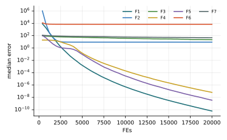

Chương 7 · Mục 7.2Chapter 7 · Section 7.2
Tối ưu bầy bướmButterfly Optimization AlgorithmButterfly Optimization Algorithm — BOABOA — following the strongest scent
Châu Văn Vân · PTITHCM
Mục tiêu bài họcLearning objectives
Sau chương này, bạn có thểAfter this chapter you will be able to
- Giải thích cách bướm dùng khứu giác để tìm thức ăn và bạn đời.Explain how butterflies use smell to find food and mates.
- Viết công thức hương f = cIa và ý nghĩa của c, a.Write the fragrance f = cIa and the meaning of c and a.
- Phân biệt bước tìm toàn cục và bước tìm cục bộ, chuyển bằng xác suất p.Distinguish global and local search steps switched by probability p.
- Nhận diện thiên lệch về gốc tọa độ trong công thức gốc.Recognize the origin bias in the original update.
Tổng quanOverview
Bướm lần theo mùi hươngButterflies follow scent
- Do Sankalap Arora và Satvir Singh đề xuất năm 2019 (Soft Computing 23).Proposed by Sankalap Arora and Satvir Singh in 2019 (Soft Computing 23).
- Bướm có thụ thể hóa học khắp cơ thể; khứu giác giúp chúng tìm mật hoa, bạn đời và nơi đẻ trứng.Butterflies carry chemoreceptors all over their body; smell guides them to nectar, mates and egg-laying sites.
- Mỗi con tỏa ra một mùi hương có cường độ phụ thuộc “độ khỏe” của nó; con khác cảm nhận và bay về phía mùi mạnh.Each butterfly emits a scent whose strength reflects its fitness; others sense it and fly toward the strongest.
- Khi không cảm nhận được mùi nào nổi bật, bướm bay ngẫu nhiên giữa các con khác.When no scent stands out, a butterfly moves randomly among the others.
Mô hình toán họcMathematical model
Mùi hương tăng chậm hơn cường độ kích thíchFragrance grows slower than the stimulus
- I: cường độ kích thích, gắn với giá trị hàm mục tiêu của con bướm.I: stimulus intensity, tied to the butterfly's objective value.
- c: tính chất cảm giác (sensory modality), thường bắt đầu 0.01 và tăng dần; a ∈ [0, 1]: số mũ, thường 0.1.c: sensory modality, usually starting at 0.01 and slowly increasing; a ∈ [0, 1]: power exponent, usually 0.1.
- a = 1: mùi không bị hấp thụ, mọi con cảm nhận như nhau; a = 0: không con nào cảm nhận được mùi của con khác.a = 1: no absorption, all butterflies sense the same; a = 0: no one senses anyone else.
Mô hình toán họcMathematical model
Xác suất p chọn giữa hai kiểu bayProbability p chooses between two moves
- Dòng trên: tìm toàn cục, bay về phía lời giải tốt nhất g*, xảy ra khi rand < p (thường p = 0.8).Top: global search toward the best g*, when rand < p (usually p = 0.8).
- Dòng dưới: tìm cục bộ với hai con j, k chọn ngẫu nhiên.Bottom: local search with two random butterflies j, k.
- Lời giải mới chỉ được nhận nếu tốt hơn (chọn tham lam).A new solution is accepted only if it is better (greedy selection).
Đây là dạng trong bài báo và mã gốc: r² · g* − x (không phải r² · (g* − x)). Số hạng −x · f luôn kéo về gốc tọa độ; sách Okwu & Tartibu viết dạng thứ hai. Hai dạng cho hành vi khác nhau.This is the form in the original paper and code: r² · g* − x (not r² · (g* − x)). The −x · f term always pulls toward the origin; Okwu & Tartibu print the second form. The two behave differently.
Các bướcSteps
Các bước của BOABOA step by step
Arora & Singh (2019), theo bài và mã gốc.Arora & Singh (2019), following the paper and original code.
- Khởi tạo n bướm; tính kích thích I từ giá trị hàm.Initialize n butterflies; compute stimulus I from the objective.
- Tính mùi hương fi = c Iia.Compute fragrance fi = c Iia.
- Với xác suất p: bay về con tốt nhất (toàn cục); ngược lại đi theo hai con ngẫu nhiên (cục bộ).With probability p: fly toward the best (global); otherwise follow two random butterflies (local).
- Nhận vị trí mới nếu tốt hơn.Accept the new position if it is better.
- Tăng c; lặp đến hết ngân sách.Increase c; repeat until the budget is spent.
2 – 5 vòng lặp chínhmain loop
Thuật toánAlgorithm
Lưu đồFlowchart
Tham sốParameters
Tham số của BOABOA parameters
| Tham sốParameter | Ý nghĩaMeaning | Giá trị thường dùngTypical value |
|---|---|---|
| p | Xác suất chuyển sang tìm toàn cụcSwitch probability to global search | 0.8 |
| a | Số mũ công suấtPower exponent | 0.1 |
| c | Hệ số cảm nhận, tăng dầnSensory modality, increasing | 0.01 → c + 0.025/(cT) |
Thuật toán BOAThe BOA algorithm
Mã giảPseudocode
Tham số: n, T, p, c, a. Mã gốc tăng c sau mỗi vòng: c ← c + 0.025 / (c · T).Parameters: n, T, p, c, a. The original code increases c after each iteration: c ← c + 0.025 / (c · T).
- Khởi tạo n con bướm; g* ← con tốt nhấtInitialize n butterflies; g* ← the best
- while chưa dừngnot stopped
- for mỗi con bướmeach butterfly: fi = c · Iai
- if rand < p: tìm toàn cục về g*global step toward g*
- else: tìm cục bộ với j, k ngẫu nhiênlocal step with random j, k
- Nhận lời giải mới nếu tốt hơnAccept the new solution if better
- Cập nhật g* và cUpdate g* and c
- return g*
Mô phỏngSimulation
15 con bướm trên cùng địa hình15 butterflies on the same landscape
Màu vệt: cam là bước toàn cục, xanh là bước cục bộ. Vì c nhỏ, mỗi bước rất ngắn; thuật toán tiến chậm nhưng không bao giờ lùi nhờ chọn tham lam.Trail colour: orange is a global step, blue a local one. With a small c, steps are tiny; the search is slow but never moves backward thanks to greedy selection.
Tham số theo mã gốc: p = 0.8, c0 = 0.01, a = 0.1. Để ý xem bầy có bị kéo về vùng gần gốc tọa độ không.Settings as in the original code: p = 0.8, c0 = 0.01, a = 0.1. Watch whether the swarm is pulled toward the origin.
Ví dụ trong sách tham khảoExample from the reference book
Okwu & Tartibu (2021), chương 11: hàm HimmelblauOkwu & Tartibu (2021), chapter 11: the Himmelblau function
| Nội dungItem | Sách ghiThe book says | Kiểm chứngVerified |
|---|---|---|
| Kết quả BOABOA result | f = 0.015431 tại (3.0175, 1.9708)f = 0.015431 at (3.0175, 1.9708) | Tính lại: f = 0.0155, gần cực tiểu (3, 2) với f = 0; chưa hội tụ hẳn sau 1000 vòngRecomputed: f = 0.0155, near the minimum (3, 2) with f = 0; not fully converged after 1000 iterations |
| Công thức 11.2Equation 11.2 | x + r² · (g* − x) · fx + r² · (g* − x) · f | Bài gốc: x + (r² · g* − x) · fOriginal paper: x + (r² · g* − x) · f |
| HimmelblauHimmelblau | —— | có 4 cực tiểu toàn cục f = 0: (3, 2), (−2.805, 3.131), (−3.779, −3.283), (3.584, −1.848)has 4 global minima f = 0: (3, 2), (−2.805, 3.131), (−3.779, −3.283), (3.584, −1.848) |
Khi báo cáo, ghi rõ dùng dạng công thức nào: kết quả của hai dạng có thể khác nhau đáng kể.When reporting, state which form of the update you used: the two can give quite different results.
Ví dụ tính tayWorked example
Mùi hương và một bước toàn cụcFragrance and one global step
- c = 0.01, a = 0.1, I = 100: f = 0.01 · 1000.1 = 0.0158.c = 0.01, a = 0.1, I = 100: f = 0.01 · 1000.1 = 0.0158.
- Vì a nhỏ, mùi hương gần như không phụ thuộc chất lượng lời giải.Because a is small, fragrance barely depends on solution quality.
Bước toàn cụcGlobal step
- x = 2, g* = 0, r = 0.5: x ← 2 + (0 − 2) · 0.0158 = 1.968.x = 2, g* = 0, r = 0.5: x ← 2 + (0 − 2) · 0.0158 = 1.968.
- Số hạng r² g* kéo về gốc tọa độ khi r nhỏ: lý do BOA rất tốt trên Sphere nhưng kém trên Sphere dịch tâm.The term r² g* pulls toward the origin when r is small: why BOA excels on Sphere but fails on shifted Sphere.
Các biến thểVariants
Các biến thể của BOABOA variants
BOA hỗn loạnChaotic BOA
Ánh xạ hỗn loạn cho p và số ngẫu nhiên.Chaotic maps for p and random numbers.
BOA nhị phânBinary BOA
Chọn đặc trưng.Feature selection.
BOA + LévyBOA + Lévy
Bước Lévy cho pha cục bộ.Lévy steps in the local phase.
BOA laiHybrid BOA
Kết hợp với ABC, PSO.Combined with ABC, PSO.
Ứng dụngApplications
Ứng dụng của BOABOA applications
Các bài toán thường gặp với BOA.Problems commonly tackled with BOA.
Thiết kếDesign
Lò xo, bình áp lực, dầm hàn.Spring, pressure vessel, welded beam.
Chọn đặc trưngFeature selection
BOA nhị phân.Binary BOA.
Năng lượngEnergy
Tham số pin mặt trời.Solar-cell parameters.
Mạng cảm biếnSensor networks
Đặt nút, phân cụm.Node placement, clustering.
Thực nghiệm · BOAExperiment · BOA
Kết quả trên bộ 7 hàm, D = 10, 30 lần chạyResults on the 7-function suite, D = 10, 30 runs
| HàmFunction | Trung bìnhMean | Độ lệchStd | Trung vịMedian | so PSOvs PSO |
|---|---|---|---|---|
| F1 · Sphere | 0 | 0 | 0 | ≈ |
| F2 · Rosenbrock | 8.92e+0 | 2.57e−2 | 8.92e+0 | − |
| F3 · Rastrigin | 1.88e+1 | 1.05e+1 | 2.21e+1 | − |
| F4 · Ackley | 6.38e−8 | 1.14e−8 | 6.46e−8 | − |
| F5 · Griewank | 4.92e−3 | 2.69e−2 | 0 | + |
| F6 · Shifted Sphere | 6.93e+3 | 1.62e+3 | 6.85e+3 | − |
| F7 · Shifted Rastrigin | 4.75e+1 | 9.54e+0 | 4.74e+1 | − |
- Sai số f(xbest) − f* sau 20 000 lần đánh giá; n = 30; tham số mặc định của bài gốc; giá trị < 10−8 ghi là 0.Error f(xbest) − f* after 20,000 evaluations; n = 30; default parameters of the original paper; values < 10−8 shown as 0.
- Cột cuối: Wilcoxon rank-sum với PSO (α = 0.05): + tốt hơn, − kém hơn, ≈ không khác biệt.Last column: Wilcoxon rank-sum vs PSO (α = 0.05): + better, − worse, ≈ no difference.
- Xếp hạng Friedman trung bình: 11.79, đứng thứ 13/18 trong 18 thuật toán của giáo trình.Average Friedman rank: 11.79, position 13/18 among the textbook’s 18 algorithms.
- Thiên lệch gốc tọa độ: trung vị F1 = 0 nhưng F6 (cùng hàm, dịch tâm) = 6.85e+3. Kết quả tốt trên F1 phần lớn do tối ưu nằm tại 0.Origin bias: median F1 = 0 but F6 (same function, shifted) = 6.85e+3. The good F1 result is largely due to the optimum lying at 0.
Thực nghiệm · BOAExperiment · BOA
Đường hội tụ (trung vị 30 lần chạy)Convergence (median of 30 runs)

Mã nguồnSource code
Mã nguồn PythonPython source code
Đoạn trích phần cập nhật chính; tệp đầy đủ có chú thích và tham số mặc định theo bài gốc.Excerpt of the main update; the full file documents the default parameters of the original paper. code/si/algorithms/boa.py
while not prob.done: g = prob.best_x I = fx - fx.min() + 1e-12 fr = c * I ** a Y = np.empty_like(X) for i in range(n): r = rng.random() if rng.random() < p: Y[i] = X[i] + (r * r * g - X[i]) * fr[i] else: j, k = rng.integers(n, size=2) Y[i] = X[i] + (r * r * X[j] - X[k]) * fr[i] Y = prob.clip(Y) fy = prob(Y) better = fy < fx X[better], fx[better] = Y[better], fy[better]
Chạy lại toàn bộ thực nghiệm: python -m experiments.run_continuous trong thư mục code/ (xem PROTOCOL.md).Reproduce all experiments: python -m experiments.run_continuous inside code/ (see PROTOCOL.md).
Đánh giáAssessment
Ý tưởng gọn, nhưng cần đọc kỹ công thứcA neat idea, but read the equations carefully
Điểm mạnhStrengths
- Chỉ một công thức hương f = cIa điều khiển cả hai kiểu bay.One fragrance rule f = cIa drives both moves.
- Chọn tham lam nên chất lượng mỗi cá thể không bao giờ giảm.Greedy selection means no individual ever gets worse.
- Ứng dụng: điều khiển tần số tải, xử lý tín hiệu máy quay, lập lịch flow shop.Applications: load frequency control, rotating-machinery signal processing, flow-shop scheduling.
Hạn chế và biến thểLimitations and variants
- Số hạng −x · f trong dạng gốc kéo về gốc tọa độ: kết quả trên hàm có tối ưu tại 0 có thể bị đánh giá quá cao.The −x · f term in the original form pulls toward the origin: results on functions optimal at 0 may be inflated.
- Hương phụ thuộc trực tiếp giá trị f(x), nên nhạy với việc dịch hoặc đổi thang hàm mục tiêu.Fragrance depends directly on f(x), so it is sensitive to shifting or rescaling the objective.
- Biến thể: BOA cải tiến với trọng số quán tính, BOA nhị phân, BOA lai với ABC.Variants: improved BOA with inertia weights, binary BOA, BOA hybridized with ABC.
Bài tập và thực hànhExercises and labs
Luyện tập: tính tay rồi lập trìnhPractice: by hand, then in code
Bài tập lý thuyếtTheory exercises
- Với c = 0.01, a = 0.1, tính hương khi I = 1, 10, 100. Nhận xét về tác dụng của a.With c = 0.01, a = 0.1, compute the fragrance for I = 1, 10, 100. Comment on the effect of a.
- Một chiều: x = 4, g* = 2, r = 0.5, f = 0.1. Tính bước toàn cục theo cả hai dạng công thức.One dimension: x = 4, g* = 2, r = 0.5, f = 0.1. Compute the global step with both forms.
- Vì sao BOA cần chọn tham lam để không đi lùi?Why does BOA need greedy selection to avoid moving backward?
Thực hành Python / MATLABPython / MATLAB labs
- Cài BOA theo cả hai dạng công thức; so sánh trên Sphere chuẩn và Sphere dịch tâm.Implement BOA with both update forms; compare on the standard and a shifted Sphere.
- Chạy lại ví dụ Himmelblau; đếm xem 30 lần chạy rơi vào bao nhiêu trong 4 cực tiểu.Rerun the Himmelblau example; count which of the 4 minima 30 runs reach.
- Khảo sát p ∈ {0.2, 0.5, 0.8}.Study p ∈ {0.2, 0.5, 0.8}.
Tài liệu tham khảoReferences
Đọc thêm: các bài báo gốcFurther reading: the original papers
- S. Saremi, S. Mirjalili, and A. Lewis, “Grasshopper Optimisation Algorithm: Theory and application,” Advances in Engineering Software, vol. 105, pp. 30–47, 2017, doi: 10.1016/j.advengsoft.2017.01.004.
- S. Z. Mirjalili, S. Mirjalili, S. Saremi, H. Faris, and I. Aljarah, “Grasshopper optimization algorithm for multi-objective optimization problems,” Appl Intell, vol. 48, no. 4, pp. 805–820, 2018, doi: 10.1007/s10489-017-1019-8.
- S. Arora and S. Singh, “Butterfly optimization algorithm: a novel approach for global optimization,” Soft Comput, vol. 23, no. 3, pp. 715–734, 2019, doi: 10.1007/s00500-018-3102-4.
- M. O. Okwu and L. K. Tartibu, Metaheuristic Optimization: Nature-Inspired Algorithms Swarm and Computational Intelligence, Theory and Applications. Springer International Publishing, 2021, doi: 10.1007/978-3-030-61111-8.
Tóm lạiIn short
Cảm ơn các bạn đã theo dõiThank you for your attention
Châu Văn Vân · PTITHCM · Tài liệu gốc: Arora & Singh, Soft Computing 23, 2019Original paper: Arora & Singh, Soft Computing 23, 2019